Maria is a very strong-willed teenage girl. From a young age she has always wanted to travel the world and see whats out there but this was against her parents wishes. They want to stand in her way and rather she get a good education and settle down with a boy of their choosing.
Maria had other plans. Once she turned 18 she snuck away in the night to pursue her dreams.
If you want to see where Maria ends up keep on scrolling to join her adventure.
Maria’s first stop was Spain where she saw bull fighting in Seville. She enjoyed the bull fighting that much she ran in front of them on the town’s streets at the San Fermín festival in Pamplona. She then finished off her exhilarating trip with some flamenco dancing in Barcelona.
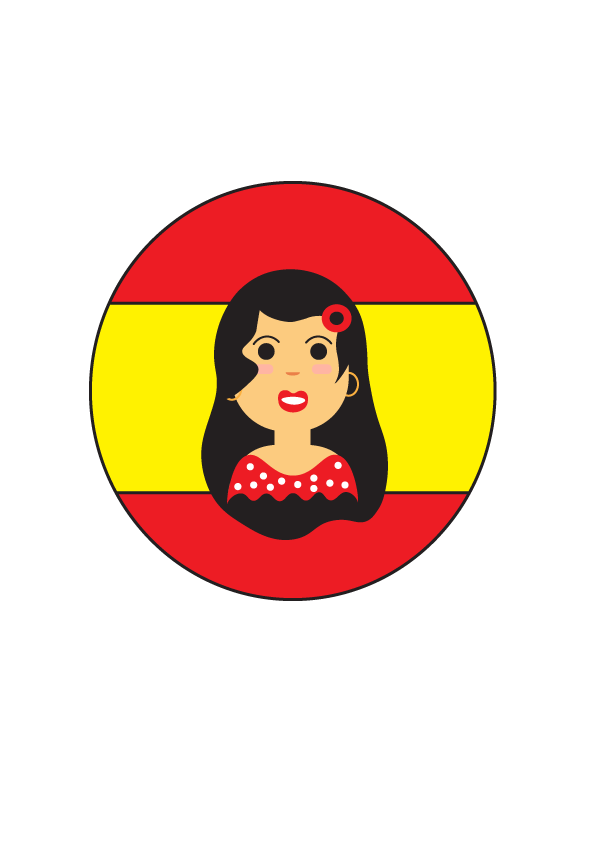Once Maria got in to France her first stop had to be Paris ‘the city of love’. Here she visited the Eiffel Tower and of course put a lock on the Pont des Arts bridge.
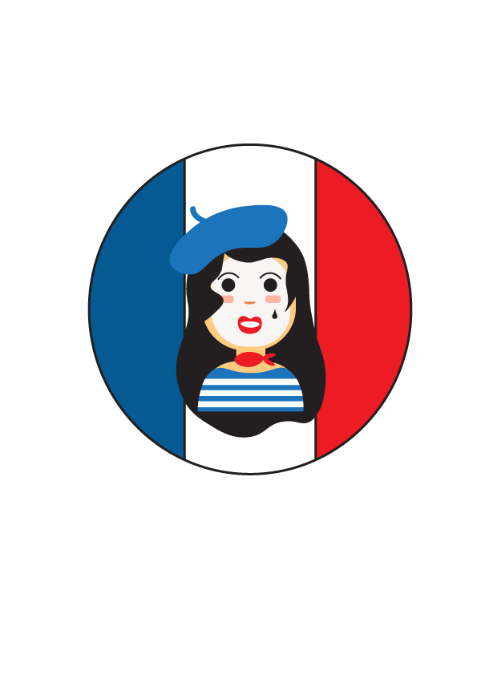Maria arrived in Ireland eager to make her way around the Giants Causeway in search for giants that supposedly live there. After her giant hunting she headed to Lough Hyne, Co Cork to go night kayaking. The adventure definitely didn’t end there as she went to Murrisk Bay at the foot of Croagh Patrick in Co Mayo to go horse riding on the beach. After an exhausting trip she ended it with a well deserved relaxing shopping outing around Grafton Street.
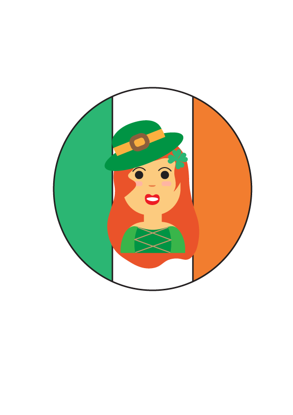Maria hopped on a camel and rode to the top of a hill overlooking the The Great Pyramids of Giza. She then very daringly snorkelled in Sharm el-Sheik to see dazzling marine life and coral. After this she ventured to explore the temples of Luxor where she saw the site of the ancient city of Thebes. Once again to end her trip on a relaxing note she ended up unwinding in Siwa Oasis a peaceful haven of palm-fringed saltwater lakes.
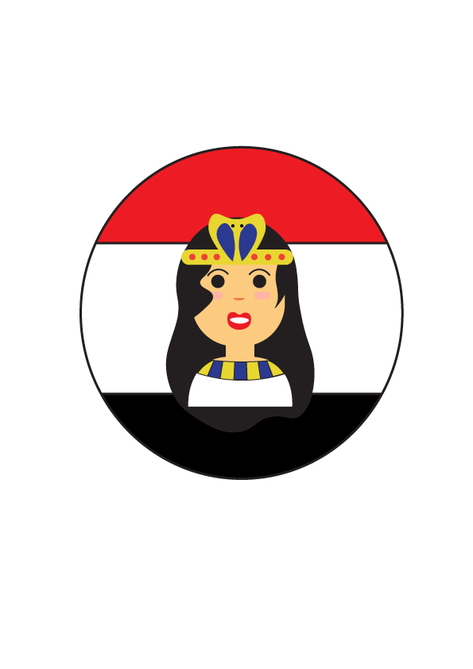Maria started off her trip to Mexico by diving into the sea to swim with whale sharks off Isla Holbox Mexico’s very own Caribbean Island. She loved being in the clear blue ocean for so long she then went surfing in Puerto Escondido. Maria wanted to try something new so she went to San Cristobal de las Casas which is known for being a spiritual retreat. Here she got her aura cleansed by a Shaman. To finish off her trip she spent the rest of the week in Mexico City where she encountered endless adventures.
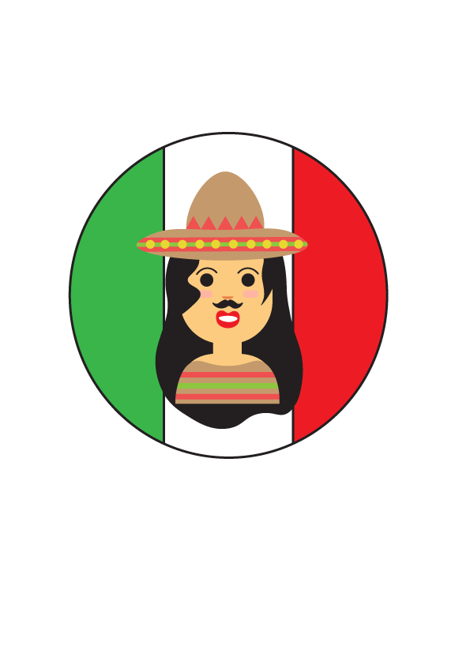Maria tried Jamaican bobsledding at Mystic Mountain Jamaica Bobsled in Ocho Rios. Maria then went rafting on a bamboo raft in the Rio Grande River. After all this Maria went to Rick’s Cafe a cliff-side bar in Negril where she had a few drinks and did some cliff jumping to past the time.
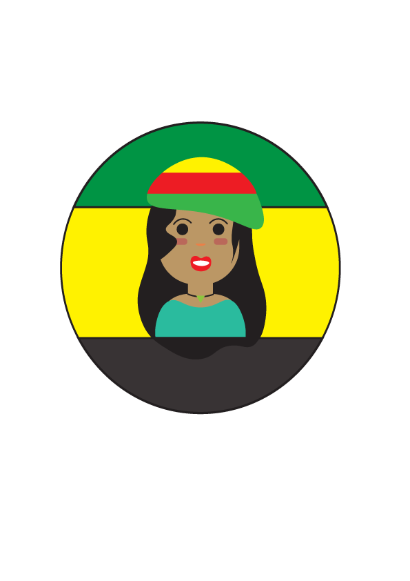Once Maria got to Canada she rushed on her bike and went mountain biking in British Columbia. She then visited the famous Niagara Falls. Then when night fell she partied in Vancouver with it being known to be the country's wildest nightlife. She strolled around looking Granville Street and Gastown looking for the best party spots. To clear her head from all her partying she paddled in a canoe in Banff National Park.
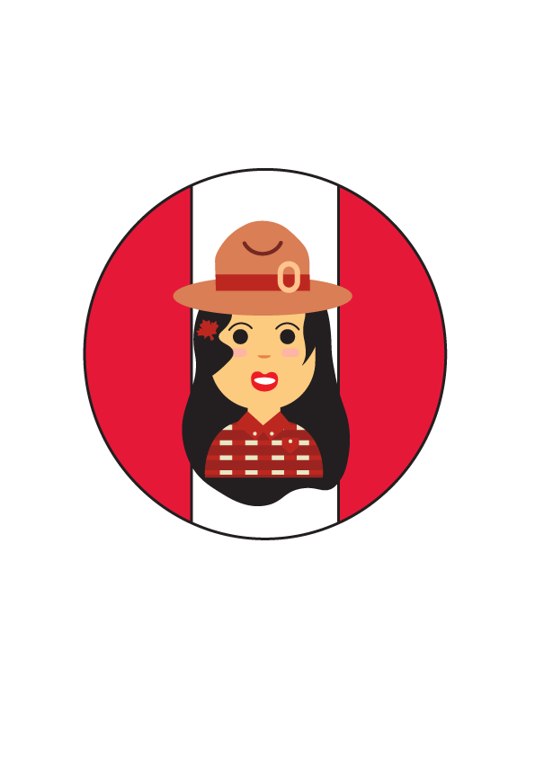India is a spiritual country and festivals are a common thing for them. Therefore, Maria wanted to experience there festivals so she danced with Lord Ganesh in the streets for Ganesh Chaturthi, she threw coloured powder and water all over people in Holi and watched fireworks at Diwali. She took a nature walk in Delhi at the Lodi Gardens. She rested the rest of her trip on a beach in Gorkana.
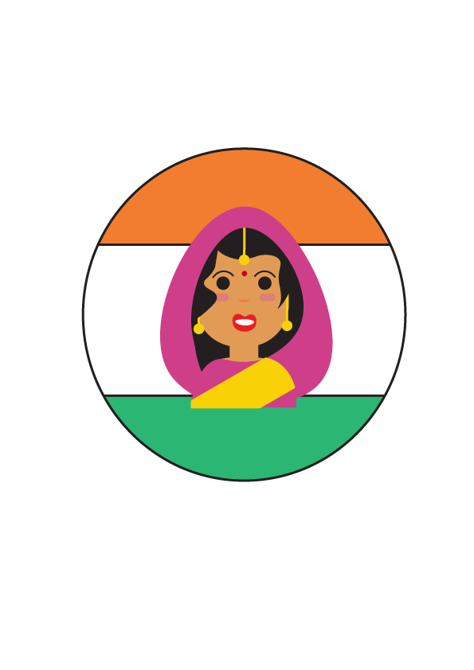Maria has a big imagination which is why she went to Neuschwanstein Castle in Füssen so she could indulge in fairytales around the castle. After this she rushed straight for Germanys largest amusement park Europa-park where she enjoyed the rides. She ended her trip by biking around the Black Forest where she saw tiny villages and sunny Freiburg.
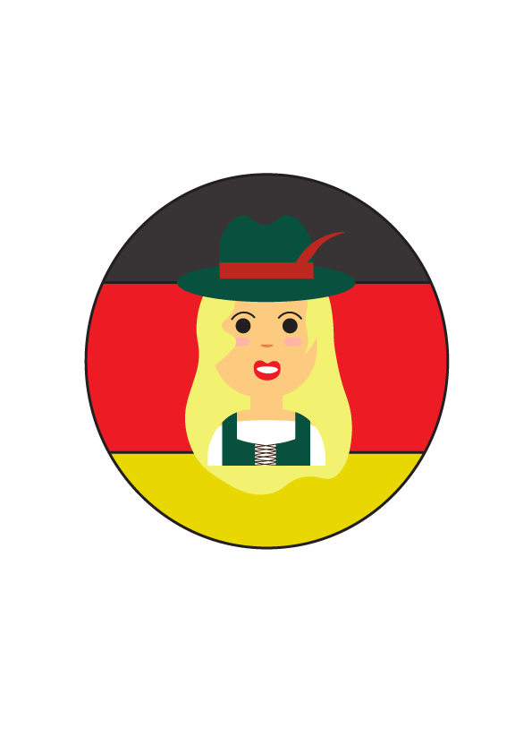When Maria arrived in Greece she was just in time to watch the sunset overlooking Santoríni’s crater. After a well rested night Maria got up the next day ready to climb mountain Olympus. Her last stop on this trip was to Athens where she too a tour about the myths and legends that shaped Athens’ history she strolled through the picturesque streets of the city and listened to the tales of mythical gods.
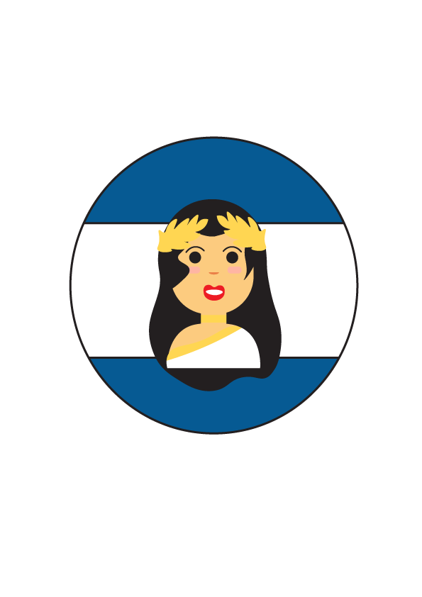Maria has a very fiery personality so she made sure not to miss out on the opportunity of going on a tour of Sicily and the volcanic Aeolain Islands. She then took a Fiat 500 tour in Rome. After all this excitement left Maria hungry so she decided to make pasta on Bologna. Maria couldn’t leave Italy before she made sure she visited the leaning tower of Pisa and got that famous selfie of herself posing as if her hands are propping it up.
Maria went to the famous Van Gogh Museum to see the art work of Vincent van Gogh. She then ventured off to Diergaarde Blijdorp the zoo in northwestern Rotterdam to see the red pandas and gorillas. She visited the Anne Frank house and ended her trip by planting some flowers in the Keukenhof Gardens.
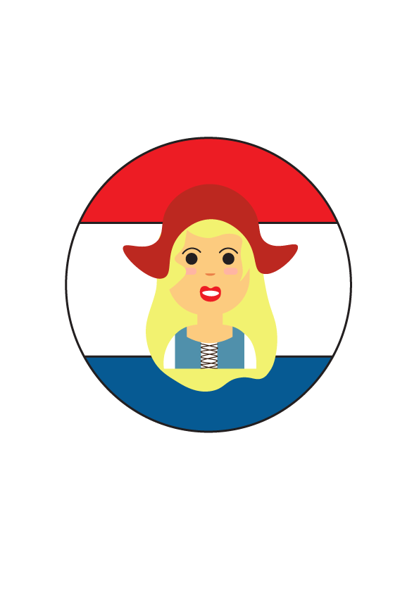